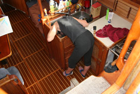
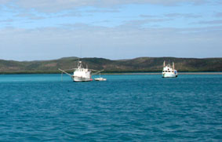
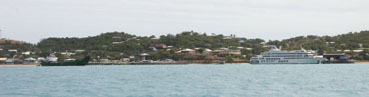
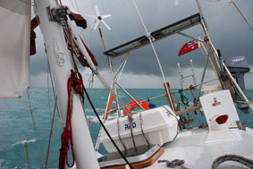
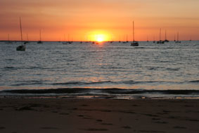
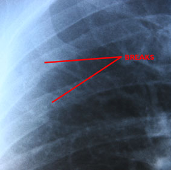
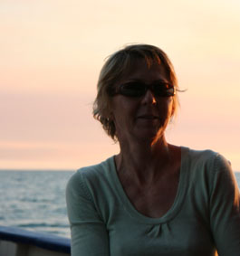
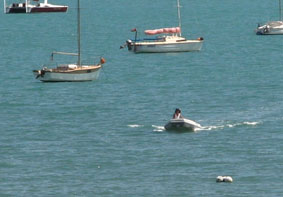

|
|
|
|
|
From Thursday Island to Darwin
Saturday, 28th July – 17.30 written by Peter
Greetings all,
The more astute among you should now be saying “Hang on! This email’s being written from Darwin – shouldn’t they be in Indonesia by now?”
And you would be right. Unfortunately, our trip has been delayed a little due to Peter and the rubber dinghy trying to share the same space and time as a large catamaran – more of that later, but to reassure those of a more nervous disposition, the rubber dinghy and the catamaran are fine.
Jean’s last email found us anchored off Horn
Island in the Torres Straight waiting for the fuel dock to
open the next morning. Eventually, we got hold of them on
VHF and arranged to dock at 11am. The books are right; it
is an easier place to get fuel that over at Thursday Island
– IF you don’t have 4 knots of current flowing, a 20 knot
offshore wind, a big ship blocking most of the available
frontage on the right and a big concrete

“No worries,” thinks I (I think I’ve been down under too long now), “I’ll ferry glide in”. Now a ferry glide uses the current to help you move the boat sideways – you angle the yacht across the current and motor forward at the same speed as the water is flowing. You are still moving forward in the direction the boat is pointing, but with no net forward movement, you end up moving sideways. The plan was to slot into the space available.
 And, as most of my plans do, it went grand for a bit – until we got into the “current shadow” of the concrete pylon. With no current flow, I had to slow down and with next to no room to maneuver the boat between pylon and ship, and the wind blowing us off the shore, we sort of hung there 10 feet out. Fortunately, Jean has a mean throwing arm and despite our mooring lines being pretty heavy, managed (after a couple of attempts) to get them to the bloke who was running the fuel dock and we winched ourselves in.
Refueling went smoothly and then Jean had to get ashore to pay. The fuel dock is designed for ships, not yachts, and so we were faced with getting Jean up a vertical 10feet of thick rubber coated piles. In the end it wasn’t too bad, but getting her back on was a lot harder since the tide was dropping. Peter ended up being a human ladder, and then we slipped the lines, let the wind blow us back clear and headed off.
Now started the longest single leg so far – just shy of 800 nautical miles (around 920 miles, or 1,500kms). There’s a “Recommended Track” shown on the charts giving the best course to follow, but since this is obviously used by the big ships, we plotted our course some 20 miles north of this.
 The forecast also looked grand – 20-25knts from the SE which would have meant a nice broad reach all the way– but it didn’t turn out so simple. At first we thought the wind changes we were seeing might have been due to being in the lee of Cape York, but after a couple of days we realized that there was a definite cycle – at dawn, the wind was down to 5-10 knots, slowly building to 20-25 during the morning. Just after dusk, the wind started to build again and ran at 25-35 knots for the night before dropping right off just before dawn. The direction also wandered – we never once saw SE winds – at best when the wind was stronger we got ESE, but when light it swung round to E or even NE.
Blah! And of course all this affects the waves as well. While the swell was generally from the East (albeit with a pretty short wavelength), the wind changes did overlay waves from different directions giving us some very interesting rolls at times, especially at night when you can’t see what’s going on.
All this meant we had to sail very conservatively, primarily sailing to minimize the rolling from the waves, with big heavy reefs in at night. At best we were getting 150 degrees off the wind, often down to 120, in the attempt to minimize Chinese gybes. Even with preventers on, the two or three unplanned gybes we had were pretty exciting (scary) when they happened.
So at the end of the day, our position plots on our charts didn’t show a nice straight route 20 miles north of the track, but a gentle oscillation. This added over 100 nm to the distance we had to travel.
It was also the longest passage to date and while some things worked well, we’ll need to have a bit of a think about others – especially eating. The watch system worked well – we formally start watches at 1900 (7pm) with Peter on for 3 hours, 2200-0100 is Jean, 0100-0400 Peter, 0400-0700 Jean. You spend the time keeping the yacht sailing as well as possible, plotting where you are and keeping a good lookout, visually and with the radar. You also spend a heap of time just looking up, blown away by how many stars you can see and how beautiful the sky is. Because there’s no light pollution from cities etc, you can see the sort of sky that our forebears would have done – and you realize why things like the Milky Way would have been so important to them. It truly is this band of stars looking like a road across the sky – just stunning.
 Now and again at night, we find ourselves needing to put in or drop out reefs or gybe, or maybe go up on deck to adjust something. In those cases, the off watch person gets woken up so both of us are up, but unless needed, the off watch person is generally sleeping. During the day, we loosely keep the same 3 hours on, 3 hours off – but most of the time we are both around anyway. If someone’s tired, or wants to cook or whatever, the other may cover for them.
The big problem is food. At first, we tried to cook a meal early evening, but the downhill rolling made cooking very difficult (if not dangerous) so after a couple of days we moved more towards grazing – food became more using tinned meat/fish or dehydrated pasta packs whenever each of us felt hungry. Not ideal, but it worked.
After about 9 days, we finally came level with Cape Don and turned south. There are two ways down to Darwin from Cape Don – either heading on west and coming south around Tiwi Islands, or turning at Cape Don before the Tiwi’s and heading down the Clarence Channel and past the Vernon Islands. The Tiwi route is the easiest, but adds another 50 odd nm to the route and ends up with a pretty long beat into the wind. The Cape Don route is shorter, but needs careful planning because of the very strong currents/tides.
What the heck – we chose the Cape Don route and tried to time it so we entered the passage just past the peak flow – even so we couldn’t make progress by sail and had to motor sail – and even so at times our speed over ground was down to 2 knots.
But then the tide changed and a few hours later, we were whizzing along at nearly 10 knots – the fastest we’ve done to date with the big girl. It felt like we were squirted out of the channel and even with the wind dropping out, it was right behind us so we poled out the headsail and made good time towards Darwin, finally dropping the anchor about half a mile off shore from the Darwin Sailing Club (DSC) at about 2pm on Sunday 15th. Jean then produced a bottle of very nice wine she’d had hidden for that moment and we enjoyed a restful hour enjoying the peace, lack of movement, no rolling and the excellent wine.
After a couple of hours getting the yacht tidied up, sail covers on etc, and a horrible realisation that the wire for the electric air pump was too short to reach where had to blow the dinghy (or inflatable as we call it) up, we had 40 minutes of manually pumping it up which was great fun. Once all the jobs were done, we leapt into the inflatable (for the first time ever) and headed ashore for a well earned drinkie and some food.
 And the first person we met was a chap called Ross, who used to sail out of our club back in Brighton and now lives up here. And how fortuitous that turned out to be.
The next afternoon there was a big briefing for the rally boats in a hotel in the city so in the morning, we took the opportunity to pop into Customs to start getting the paperwork sorted out and then onto the Indonesian Consulate to start the ball rolling with visas. That evening back at the club, we started to get to know some of the other cruisers.
And what an eclectic mix…..of boat types, nationalities and crew structures. Catamarans, small and large, monohulls of all descriptions – one mast / two masts, ..Swedish, French, Dutch, English, Americans
Tuesday was a make and mend day on the boat – fixing various things or ordering the bits we needed. That evening we met up with Ross and another friend, Julie, for dinner and Julie very kindly offered us the use of her car and flat which is just across the road from the club – little did she know…..
Wednesday was the dirty day with Peter spending most of the morning doing an oil change on the engine and replacing various filters and bleeding the fuel system. At lunchtime, Peter took Jean ashore in the inflatable so she could take Julie’s car into town to get various bits, had a couple of drinks with a couple of Swedish sailors we’d met and then headed back to carry on working on Hinewai.
It was dark by the time Jean got back and called me up to come and get her so I hurried ashore. I was almost there when one the Swedes I’d been drinking with passed me in his inflatable. We waved as we passed and then I thought I heard him call me. I looked backwards……
And sideswiped a dark coloured, unlit catamaran – at speed (now I know what they mean by all cats are black at night). Now when steering the inflatable, you sit up the side, steering the boat with your left hand which means you’re leaning forward a bit. This meant I didn’t catch the side of the cat directly on my shoulder, but just below my right shoulder blade, also banging the side of my head pretty hard.
Fortunately, the impact knocked me into the bottom of the inflatable, not over the side, because I was certainly pretty stunned. If fact, once I got my self together, I ended up parking the inflatable on the beach at the motor yacht club next to the DSC and was very confused why I couldn’t find anyone I knew when I went ashore.
Eventually I worked out where I was and moved round to the right bit of beach, joining Jean with a few others at a table with a couple of drinks. Apart from a slight headache, I just felt a bit bruised, only starting feel sore as we skipped across the waves going back to Hinewai.
The next morning though, I could not get out of bed – the pain was unreal. Typical bloke I am, I disagreed with Jean I should go to hospital – that was until I tried to get down the ladder into the inflatable. The Pain was so bad, I had to let go and fell, fortunately into the bottom of the inflatable. The trip ashore was indescribable – I had tears streaming down my face, hunched over hugging myself. By the time I crawled out of the inflatable, even I agreed with Jean that at trip to A&E might be a good idea.
 To cut a long story sort (it included at lot of me whimpering), I went through the A&E dept at Royal Darwin hospital culminating with the doctor slapping my X-Rays onto those light boxes like they do on the telly. Looking over his shoulder, I just went “Ohhhhh Shit!” Even I could see two very clearly broken ribs. Not just cracked, but clean breaks. They’re ribs 3 & 4, just under the shoulder blade – and they hurt.
So, here we are stuck in Darwin while I mend. I wondered why the A&E doctor laughed when I asked if I’d be ok to sail the following Saturday – but it became very clear very quickly we wouldn’t be joining the main fleet when they set off. Our hope was that we’d be able to join the second fleet when they left the following week, but they headed off yesterday and there’s still no way we could be sailing. Indeed, I’ve spent the last week flat on my back in Julie’s flat since there’s no way I can even get out to the yacht. It’s not so much been pain from the broken ribs, but from all the muscle spasms around my rib cage as the muscles try and compensate to protect the broken area – Imagine the worst stitch you have ever had, multiple it by 10 and have it in three or four distinct areas around your rib cage.
 I’ve been on mega painkillers and they have hardly touched the pain. However, the other night, Jean was over at the club and chatting to a couple of Poms – the hubby had done something similar. His GP had prescribed Valium to help relax his muscles (and him) and he’s let us have the half dozen 10mg tabs he didn’t use. God, they’ve made a difference – both physically and emotionally.
Today is a red letter day – it’s the first time I’ve been able to sit up and even type on this laptop.
I’m back to see a local GP tomorrow to get an idea when we might be able to go, but it’s probably going to be another couple of weeks..
THE NEXT DAY
Bugger, bugger, bugger! Saw the old sawbones today who tells me it will be at least another three weeks before I can safely even think about sailing on. Apparently these are seriously broken ribs and there’s a pretty strong chance that if I do the wrong thing too soon, they’ll quietly splinter – and if they do, we risk pneumo-something or other, or punctured lungs.
So Jean and I will be spending the rest of today going through all the charts we have of Indonesia and working out a bit of a fall back route. Whatever, we have to go to Kupang first since that is the port we have said we’ll check in at – and the thought of changing that with Indonesian meritocracy doesn’t bear thinking of. From there though, we are thinking we might just head south, then west and passage along to Rinca, missing Alor and Flores, which to be honest, we were fortunate enough to see with the American couple that we crewed for 10 years ago. I’m booked for more x-rays in a couple of weeks and who knows what they will show.
 But Jean has been absolutely magic during this. Being a bloke, I don’t do pain too well, and she’s been so caring it’s helped so much. I truly am a lucky chap.
And if anyone fancies a bit of a sail with us, do feel free to let us know. The doc says it’ll be two or three months before all is properly mended so I’m going to have to be very careful for a bit. Our roles on the yacht have now settled down – Jean’s the brains, I provide the brawn and broken brawn isn’t much use.
A COUPLE OF DAYS LATER
I think today’s Tuesday and I here all by myself now. Jean headed back to Perth a couple of days ago to surprise her folks – and from what I hear succeeded. A mate from Melbourne is actually coming up tomorrow on business so I’ll have someone to play with in the evenings.
So I’ll call it a day with this and try and get it sent off now. At the end of the day, while it’s a bugger this has happened, if I am going to break something, there few nicer places to do it.
Hopefully the next email will be from Indonesia. As I said, we’ll still need to head to Kupang first since that’s where our CAIT says we’re entering Indonesia, but having sailed Alor and Flores etc before, we’ve decided we will give those a miss and head straight to northern Bali – if we can we want to try and get ahead of the 140 odd yachts from the Rally currently working their way through the archipelago.
From there, who knows – we’ll see.
Jean sends all her best to you all
As do I
Peter Next Log Page: Darwin 1 |
|
|
|
|
|
|
The Crew The Route The Yacht The Log Guestbook Links Contact Us |
|
|
|
|
|
Home |
|
|
All Original Content of this Web Site Copyright © 2000, 2001, 2002, 2003, 2004, 2005, 2006, 2007, 2008, 2009 Ocean Odyssey Pty Ltd |